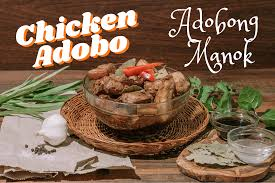

Chicken Adobo
Chicken Adobo is a popular Filipino dish made with soy sauce, vinegar, garlic, and spices. It is known for its savory flavor.
Chicken Adobo is a popular Filipino dish made with soy sauce, vinegar, garlic, and spices. It is known for its savory flavor.
Adobo is loved for its rich taste, simple ingredients, and long shelf life. Every family has their own version.